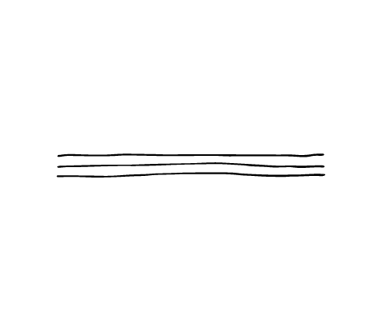

Discription:
Pillus is a type of pasta found in Sardinia, particularly around Oristano. A noodle-like pasta, it is made in thin ribbon strips. A feature of this pasta is that it is kneaded for a long time. It is cooked in beef (or sometimes sheep) broth and served with pecorino cheese.In Busachi the pasta is flavoured with toasted saffron and ground to a powder

-
begginermaster
-
smalllarg
-
shortlong

120 pieces

5 minuts